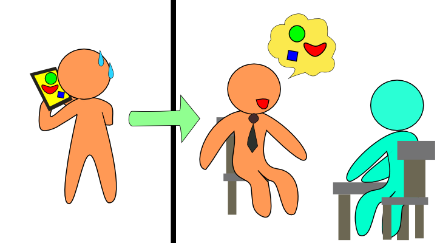

スマートフォンへの対応に向けた
eポートフォリオシステムの拡張
M2 佐藤隆広
M1 秀毛嶺維馬
B3 ○ 山本賢人 梅本祥平 中野佑 菊谷悠太
B2 菅野久樹 佐藤祐磨 赤木勇極 阿保友也
2013/01/25 平成24年度 高度ICT演習最終成果発表会
アジェンダ
- 背景
- 目的
- 問題点
- 機能
- 実現方法
- 予定と実績（スケジュール）
- デモ
- 演習の成果
- 今後の課題と反省
背景：ポートフォリオ
|
ここで対象とするポートフォリオとは、レポートなどの学習成果物を蓄積したものである
多くの学習成果物が統合されているため、学習の振り返りに活用できる
- 学習の振り返りは、PDCAサイクルの確立や、就職活動にも活用可能である
大学教育の変化によりポートフォリオが必要とされている
- 大学教育の質の保証のために学習の証拠物の提示が不可欠である
|
eポートフォリオシステムの現状
|
大学教育では、ポートフォリオを電子化したeポートフォリオシステムが活用されている
- 多くのeポートフォリオシステムはPC向けのWebアプリケーションである
- PCからインターネットを利用できない場面ではポートフォリオを確認できない
- PC向けのアプリケーションであるため、UIや機能が他の端末に適しているとは限らない
|
スマートフォンによる
eポートフォリオシステムの利便性の向上
|
スマートフォンであれば、外出先でもポートフォリオの確認ができる
PC向けWebアプリケーションをスマートフォンから利用するのは困難である
eポートフォリオシステムのスマートフォン対応のために以下を検討し、eポートフォリオシステムの拡張を行う
- スマートフォン向けUI
- スマートフォン向け機能
- Webアプリケーションをスマートフォン向けに対応させるためのシステムアーキテクチャ
|
スマートフォンとPCの違い
スマートフォンとPCの間には違いがあり、使用場面で差が生じている
インタフェースの違いによる差
デバイス的な違いによる差
- PCと違いスマートフォンはキーボード入力ではない
→長文の入力がPCよりも困難である
- スマートフォンはPCよりも携帯が容易
→PCよりもスマートフォンの方が、即時性が高い

スマートフォン向け機能の提案
|
通知機能
写真アップロード機能
ポートフォリオ確認機能
|

|
通知機能：更新情報の通知
前回ログイン時から次回ログイン時までの間で、グループ内で共有している学習成果物が更新されると、ログイン後のトップページに更新情報が表示される
アップロード機能：写真のアップロード
学習成果物として蓄積したい写真や動画を、スマートフォンから直接アップロードする

|
|
ポートフォリオ確認機能
自身のポートフォリオを手軽に確認する
面接の前など、自分の学習成果物を振り返る際に用いる

システムの全体図
拡張する前のeポートフォリオシステムは、Ruby on Railsで構成されていた
Ruby on Railsで構成されるアプリケーション内でjQuery Mobileを使用することは、困難であった

システムの全体図
eポートフォリオシステムをSinatraで拡張することで、jQuery Mobileを簡単に使用することを可能にした

開発技術
|
スマートフォン向けのUIの実現
|
→ |
jQuery Mobile |
|
スマートフォン向けのサーバにはデータベースや認証が不要なため軽量なフレームワーク
|
→ |
Sinatra |
|
PC向けのeポートフォリオシステムがRuby on Railsでできていたため
|
→ |
Ruby on Rails |
実績
スマートフォンからポートフォリオを確認するための機能を実装できた
eポートフォリオシステムで更新された内容をスマートフォンから確認する機能を実装できた
それぞれの機能をスマートフォン向けのUIで実装できた
スマートフォン向けのシステムアーキテクチャを検討できた
アップロード機能は実装できなかった
実装できた機能について、ユーザビリティの検証は行えなかった
学習の成果
|
環境構築
|
- GitHub, Sinatra, Ruby on Rails
|
|
GitHubの学習
|
|
|
Rubyの学習
|
|
|
HTML5の学習
|
- jQuery Mobileを用いたログイン画面の作成
- Canvasを使ったJavaScriptの学習
|
|
仕様検討
|
- スマートフォン向けの機能、UIの検討
- 採用技術の検討
|
|
Sinatraの学習
|
- Sinatraで構成されるアプリケーション内でjQuery Mobileを利用できることを確認
|
今後の課題
- アップロード機能が未実装
- 実データを入れた状態で動かしているわけでは無いので、実用に耐えうるかどうか検証する必要がある
- 検証した技術を今後活用できるか判断し、スマホへと展開させていく
←
→
/
#